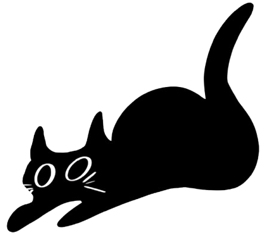

home //
about //
publications+misc. math //
not‑math //
vitae
publications etc.
i am currently working on: doing as many group theory problems as humanly possible
publications
[2023]
Closest Point Exterior Calculus with Michael Owens, Juheng Wu, Grace Yang, and Albert Chern. SIGGRAPH Asia. December 2023.
[pdf]
misc. math writing
Introduction to Riemannian Geometry
An Introduction to Group Cohomology
Kahler Manifolds and Ricci Curvature
Analyst's Traveling Salesman Problem
